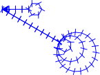
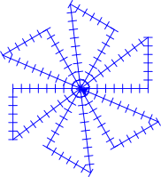

Christmas decoration, snowflakes and rotational symmetry
Contents
Christmas decoration, snowflakes and rotational symmetry#
This guide will show you how to decorate for Christmas with Python-embroidered ornaments. The image below shows an example of the decorations we will create through turtle programming.

A classic choice of motive when decorating Christmas ornaments is a snowflake. What is it about the appearance of snowflakes that makes them so decorative?

Snøfnugg (image av Wilson Alwyn Bentley (1865-1931)).#
If we inspect the crystal closer, we can see that symmetry is one of its key features. Precisely, we can see that it has rotational symmetry, which means that it looks the same (except for small “flaws”) when we rotate it. Rotational symmetry is decorative and efficient and is commonly found in nature, mathematics, design, and art.
Nature#
Starfish (image by Julia Volk).

Mathematics#
Illustration of a mathematical concept (illustration by Parcly Taxel)
{kind=link}

Art#
A room decorated with colourful tiles (image by Andreea Ch)

Technology#
Drone (image by Humphrey Muleba)
Decorate for Christmas with Python-embroidered snow crystals!#
Embroider a line#
Start by copying the code below into your code editor and run it. What image is drawn on the screen?
1from turtlethread import Turtle
2
3needle = Turtle()
4with needle.running_stitch(50):
5 needle.forward(100)
6
7needle.visualise()
{kind=link}
Let’s go through the code line for line:
- Line 1
Imports
Turtlefrom theturtlethreadlibrary. This can be thought of as asking Python to go in the tool shed (turtlethread), collect the tool (Turtle) we need, and place it on our workbench.- Line 3
Uses the
Turtlecommand to create aTurtleobject and save it in a variable namedneedle. This is what we will use for embroidery.- Line 4
Tells what type of stitch we will use. To read more about different stitches in turtlethread, click here.
- Line 5
Tell the needle to move 100 steps forward. Notice that this code is indented one level under the
with needle.running_stitch(50):, meaning that the needle will create stitches as it moves.- Line 7
Calls the needles
visualisemethod. This method usesturtleto draw a visualisation of how the embroidery will look and is a nice way to see if your pattern looks right before you try to embroider it onto fabric.- Lines 3 and 6
Are empty. Empty lines are used to make the code cleaner and easier to read, but is ignored by the program and removing them has no effect on the output.
Try it yourself:
Modify the code to use stitches that are 30 steps in length per stitch. Rerun the program, can you tell the difference?
Modify the code to make the needle move 90 steps forward instead of 100 steps
Click here to see how the finished code should look:
1from turtlethread import Turtle
2
3needle = Turtle()
4with needle.running_stitch(30):
5 needle.forward(90)
6
7needle.visualise()

Attention
Make sure your code matches the finished code above before you proceed.
Turn right#
We want the “arms” of the crystal to have “branches”.
For this, we need to rotate the needle, which we can do with the right command.
The below program draws a branch with a 45-degree rotation and a length of 90 steps:
1import turtlethread
2
3needle = turtlethread.Turtle()
4with needle.running_stitch(30):
5 # Move forward a little bit
6 needle.forward(90)
7
8 # Draw a "branch" that points a little downwards
9 needle.right(45)
10 needle.forward(90)
11
12needle.visualise()

- Lines 5 and 8
Starts with a # symbol, meaning that these lines contain comments that Python will ignore. Comments like these are used to keep the code organised with short explanations.
- Line 9
Rotate the turtle 45 degrees to the right.
Try it yourself:
Run the program and see what’s drawn on the screen
Modify the code, so the branch is rotated 30 degrees instead of 45
Modify the code, so the branch has a length of 60 instead of 90.
Klikk her for å se programmet slik det skal være om du har gjort det rett:
1import turtlethread
2
3needle = turtlethread.Turtle()
4with needle.running_stitch(30):
5 # Move forward a little bit
6 needle.forward(90)
7
8 # Draw a "branch" that points a little downwards
9 needle.right(30)
10 needle.forward(60)
11
12needle.visualise()

Attention
Make sure your code matches the finished code above before you proceed.
Complete the snowflake arm#
After drawing a branch, we must move backwards and rotate back to continue the arm. For this, we can use backward and left:
1import turtlethread
2
3needle = turtlethread.Turtle()
4with needle.running_stitch(30):
5 # Move forward a little bit
6 needle.forward(90)
7
8 # Draw a "branch" that points a little downwards
9 needle.right(45)
10 needle.forward(60)
11 needle.backward(60)
12 needle.left(45)
13
14 # Move forward a little bit more
15 needle.forward(90)
16
17needle.visualise()
{kind=link}
Prøv selv:
Run the program and see what’s drawn on the screen
Why are the numbers on lines 10 and 11 equal? Is this important? Why/why not?
We’ll finish the “arm” by moving backwards and drawing a branch on the other side. It’s important that we end with the needle in the same position and pointing in the same direction as we started:
1import turtlethread
2
3needle = turtlethread.Turtle()
4with needle.running_stitch(30):
5 # Move forward a little bit
6 needle.forward(90)
7
8 # Draw the first "branch" pointing a little downwards
9 needle.right(30)
10 needle.forward(60)
11 needle.backward(60)
12 needle.left(30)
13
14 # Move forward and then back again
15 needle.forward(90)
16 needle.backward(90)
17
18 # Draw the second "branch" pointing a little upwards
19 needle.left(30)
20 needle.forward(60)
21 needle.backward(60)
22 needle.right(30)
23
24 # Move backwards to the starting point
25 needle.backward(90)
26
27needle.visualise()
{kind=link}
Try it yourself
Run the code and see what is drawn on the screen.
What does line 19 to 22 do?
Attention
Make sure your code matches the finished code above before you proceed.
Use loops to form a snowflake#
Now we have code to instruct are needle-turtle to embroider one arm of a snowflake. However, most snowflakes have multiple arms. So, to draw a full flake, we need to repeat these commands multiple times. For this, we can use a loop. If you want to read more about loops in Python you can click here, but for now you just need to know that we can draw four arms with a for loop like so:
1import turtlethread
2
3needle = turtlethread.Turtle()
4with needle.running_stitch(30):
5
6 for arm in range(4):
7 # Move forward a little bit
8 needle.forward(90)
9
10 # Draw the first "branch" pointing a little downwards
11 needle.right(45)
12 needle.forward(60)
13 needle.backward(60)
14 needle.left(45)
15
16 # Move forward and then back again
17 needle.forward(90)
18 needle.backward(90)
19
20 # Draw the second "branch" pointing a little upwards
21 needle.left(30)
22 needle.forward(60)
23 needle.backward(60)
24 needle.right(30)
25
26 # Move backwards to the starting point
27 needle.backward(90)
28
29 # Rotate 90 degrees to the right to draw four branches
30 needle.right(90)
31
32needle.visualise()
{kind=link}
- Line 6
Starts a for loop and lets Python know that everything in this loop should happen 4 times. Notice that lines 7-20 have been indented an extra level. This tells Python that these lines are inside the loop and should be repeated for each loop repetition.
- Line 30
Tells the turtle to rotate 90 degrees for each loop repetition. This rotation is necessary so we don’t draw all four arms on top of each other.
Try it yourself:
Run the program and see what is drawn on the screen
Why is there a 90-degree rotation on line 30? What happens if you change it to 60 instead?
Modify the code to draw a snowflake with 6 arms instead of 4.
Click here to see how the finished code should look:
1import turtlethread
2
3needle = turtlethread.Turtle()
4with needle.running_stitch(30):
5
6 for arm in range(6):
7 # Move forward a little bit
8 needle.forward(90)
9
10 # Draw the first "branch" pointing a little downwards
11 needle.right(30)
12 needle.forward(60)
13 needle.backward(60)
14 needle.left(30)
15
16 # Move forward and then back again
17 needle.forward(90)
18 needle.backward(90)
19
20 # Draw the second "branch" pointing a little upwards
21 needle.left(30)
22 needle.forward(60)
23 needle.backward(60)
24 needle.right(30)
25
26 # Move backwards to the starting point
27 needle.backward(90)
28
29 # Rotate 60 degrees to the right to draw six branches
30 needle.right(60)
31
32needle.visualise()
{kind=link}
Attention
Make sure your code matches the finished code above before you proceed.
Now we have code to draw a complete snowflake!
Try it yourself:
Use code to draw your own snowflake with rotational symmetry. Below is a gallery with some examples you can use as a starting point or just for inspiration!
Create an ornament with your snowflake#
{kind=link}
To create an ornament with the snowflake embroidery you first need to save the pattern as an embroidery file. You can do this by adding
needle.save("snowflake.jef")
at the end of your script. Note that we here used the .jef extension, which we have found to work well with the Bernina 500 machine, but you might want to use another filetype for your machine (e.g. snowflake.pes).
Once you’ve created the embroidery file, you can follow these instructions:
Embroider one or two snowflakes, depending on whether you want a snowflake on both sides of the ornament.
Place the two fabric pieces on top of each other so the embroidery patterns are on top of each other and pointing outwards.
Sew the pieces together (either by hand or by drawing a circle with turtlethread).
Example snowflakes#
Snowflake 1
{kind=link}
Snowflake

Code for arm
1from turtlethread import Turtle
2
3needle = Turtle()
4
5with needle.running_stitch(10):
6 # Rotate snowflake half a turn
7 needle.right(30)
8
9 # Draw arm of main snowflake
10 needle.forward(100)
11 needle.right(90)
12 needle.circle(30)
13 needle.circle(20)
14 needle.circle(10)
15 needle.left(90)
16 needle.backward(100)
17 needle.left(60)
18
19
20 # Rotate 30 degrees before drawing the arm of the second snowflake
21 needle.right(30)
22 # Draw arm of second snowflake
23 needle.forward(40)
24 needle.right(90)
25 needle.circle(10)
26 needle.left(90)
27 needle.backward(40)
28 needle.left(60)
29
30needle.visualise()
Code for snowflake
1from turtlethread import Turtle
2
3needle = Turtle()
4
5with needle.running_stitch(10):
6 # Rotate snowflake half a turn
7 needle.right(30)
8
9 for arm in range(6): # Draw arms of main snowflake
10 needle.forward(100)
11 needle.right(90)
12 needle.circle(30)
13 needle.circle(20)
14 needle.circle(10)
15 needle.left(90)
16 needle.backward(100)
17 needle.left(60)
18
19
20 # Rotate 30 degrees before drawing the second snowflake
21 needle.right(30)
22 for arm in range(6): # Draw arms of second snowflake
23 needle.forward(40)
24 needle.right(90)
25 needle.circle(10)
26 needle.left(90)
27 needle.backward(40)
28 needle.left(60)
29
30needle.visualise()
Snowflake 2
{kind=link}
Snowflake
{kind=link}
Code for arm
1from turtlethread import Turtle
2
3needle = Turtle()
4
5with needle.running_stitch(10):
6 needle.forward(40*2)
7 needle.left(90)
8 needle.forward(30*2)
9 needle.left(127)
10 needle.forward(50*2)
11 needle.right(127)
12 needle.right(90)
13
14 needle.left(60)
15
16needle.visualise()
Code for snowflake
1from turtlethread import Turtle
2
3needle = Turtle()
4
5with needle.running_stitch(10):
6 for arm in range(6):
7 needle.forward(40*2)
8 needle.left(90)
9 needle.forward(30*2)
10 needle.left(127)
11 needle.forward(50*2)
12 needle.right(127)
13 needle.right(90)
14
15 needle.left(60)
16
17needle.visualise()
Snowflake 3

{kind=link}
Code for arm
1from turtlethread import Turtle
2
3needle = Turtle()
4
5with needle.running_stitch(10):
6 # Draw arm of main snowflake
7 needle.forward(100)
8 needle.right(40)
9 needle.forward(40)
10 needle.backward(40)
11 needle.left(40)
12 needle.forward(30)
13 needle.right(30)
14 needle.forward(20)
15 needle.backward(20)
16 needle.left(30)
17 needle.forward(20)
18
19 needle.backward(20)
20
21 needle.right(-30)
22 needle.forward(20)
23 needle.backward(20)
24 needle.left(-30)
25
26 needle.backward(30)
27
28 needle.right(-40)
29 needle.forward(40)
30 needle.backward(40)
31 needle.left(-40)
32 needle.backward(100)
33 needle.left(60)
34
35 # Rotate 30 degrees before drawing the arm of the second snowflake
36 needle.right(30)
37
38 # Draw arm of second snowflake
39 needle.forward(50)
40
41 needle.right(40)
42 needle.forward(20)
43 needle.backward(20)
44 needle.left(40)
45
46 needle.forward(30)
47 needle.backward(30)
48
49 needle.left(40)
50 needle.forward(20)
51 needle.backward(20)
52 needle.right(40)
53
54 needle.backward(50)
55 needle.left(60)
56
57needle.visualise()
Code for snowflake
1from turtlethread import Turtle
2
3needle = Turtle()
4
5with needle.running_stitch(10):
6 for arm in range(6): # Draw arm of main snowflake
7 needle.forward(100)
8 needle.right(40)
9 needle.forward(40)
10 needle.backward(40)
11 needle.left(40)
12 needle.forward(30)
13 needle.right(30)
14 needle.forward(20)
15 needle.backward(20)
16 needle.left(30)
17 needle.forward(20)
18
19 needle.backward(20)
20
21 needle.right(-30)
22 needle.forward(20)
23 needle.backward(20)
24 needle.left(-30)
25
26 needle.backward(30)
27
28 needle.right(-40)
29 needle.forward(40)
30 needle.backward(40)
31 needle.left(-40)
32 needle.backward(100)
33 needle.left(60)
34
35 # Rotate 30 degrees before drawing the arm of the second snowflake
36 needle.right(30)
37
38 for arm in range(6): # Draw arm of second snowflake
39 needle.forward(50)
40
41 needle.right(40)
42 needle.forward(20)
43 needle.backward(20)
44 needle.left(40)
45
46 needle.forward(30)
47 needle.backward(30)
48
49 needle.left(40)
50 needle.forward(20)
51 needle.backward(20)
52 needle.right(40)
53
54 needle.backward(50)
55 needle.left(60)
56
57needle.visualise()